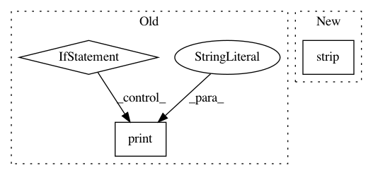

5ce56ff7e7f0c085bdff9745471c50aa4d0e1faa,precise/stream.py,,main,#,78
Before Change
stdout = sys.stdout
sys.stdout = sys.stderr
if sys.stdin.isatty() or len(sys.argv) > 3 or len(sys.argv) == 1 or (len(sys.argv) == 3 and not sys.argv[2].isdigit()):
print("Usage:", sys.argv[0], "MODEL_NAME [CHUNK_SIZE] < audio.wav")
print(" stdin should be a stream of raw int16 audio,")
print(" written in groups of CHUNK_SIZE samples.")
print()
print(" If no CHUNK_SIZE is given it will read until EOF.")
print()
print(" For every chunk, an inference will be given")
print(" via stdout as a float string, one per line")
sys.exit(1)
global tf
import tensorflow
tf = tensorflow
After Change
parser.add_argument("-v", "--version", action="version", version=__version__)
parser.add_argument("model_name")
parser.add_argument("chunk_size", type=int, nargs="?", default=-1)
parser.usage = parser.format_usage().strip().replace("usage: ", "") + " < audio.wav"
args = parser.parse_args()
if sys.stdin.isatty():
In pattern: SUPERPATTERN
Frequency: 3
Non-data size: 3
Instances
Project Name: MycroftAI/mycroft-precise
Commit Name: 5ce56ff7e7f0c085bdff9745471c50aa4d0e1faa
Time: 2017-11-03
Author: matthew3311999@gmail.com
File Name: precise/stream.py
Class Name:
Method Name: main
Project Name: DexterInd/GoPiGo3
Commit Name: e7356fb0cfd38751274d12c2930cac0f80f8f882
Time: 2019-05-29
Author: cleoqc1124@gmail.com
File Name: Software/Scratch/GoPiGo3Scratch.py
Class Name:
Method Name: handle_GoPiGo3_msg
Project Name: DexterInd/GoPiGo3
Commit Name: e7356fb0cfd38751274d12c2930cac0f80f8f882
Time: 2019-05-29
Author: cleoqc1124@gmail.com
File Name: Software/Scratch/GoPiGo3Scratch.py
Class Name:
Method Name: handle_GoPiGo3_Sensor_msg